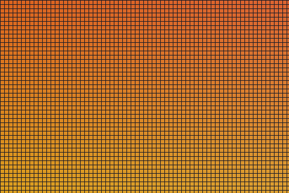

Grey body text on an off-white background. Move the cursor to the right and both shift toward green, keeping the same contrast.
A dark section. The right side keeps it dark and tints it with the image's orange.

This section has no image, so it uses data-accent instead.